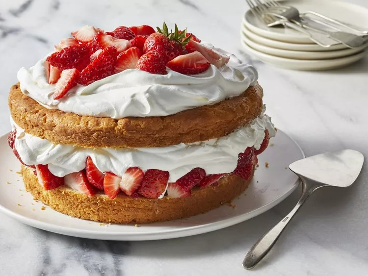

|

|
- 2 cups self-rising flour, plus more for dusting
- 1/4 cup granulated sugar
- 3/4 cup cold unsalted butter (6 ounces), cubed, plus more for greasing
- 3 cups chilled heavy cream, divided
- 16 ounces fresh strawberries, hulled and quartered (about 3 cups)
|
- Preheat oven to 425°F. Grease and flour an 8-inch round cake pan. Stir together flour and sugar in a large bowl. Cut in the cubed butter until pea-size crumbs form. Using a fork, stir in 1 cup cream until a dough forms. Scrape dough into prepared pan, and lightly press it into an even layer.
- Bake in preheated oven until golden and a toothpick inserted in center comes out clean, about 30 minutes. Transfer cake to a wire rack, and let cool in pan 10 minutes. Invert cake onto rack, and let cool completely.
- Whisk remaining 2 cups cream in a medium bowl until stiff peaks form. Cut cake in half horizontally to create 2 layers. Scatter half of the strawberries over bottom half, and top with half of the whipped cream. Cover with top cake layer. Spread remaining half whipped cream over top of cake, and top with remaining strawberries. Serve immediately.
|